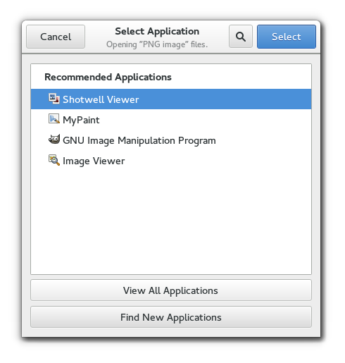

Gtk.AppChooserDialog¶
Example¶

- Subclasses:
None
Methods¶
- Inherited:
Gtk.Dialog (14), Gtk.Window (119), Gtk.Bin (1), Gtk.Container (35), Gtk.Widget (278), GObject.Object (37), Gtk.Buildable (10), Gtk.AppChooser (3)
- Structs:
Gtk.ContainerClass (5), Gtk.WidgetClass (12), GObject.ObjectClass (5)
class |
|
class |
|
|
|
|
|
|
Virtual Methods¶
Properties¶
Name |
Type |
Flags |
Short Description |
|---|---|---|---|
r/w/co |
The |
||
r/w/en |
The text to show at the top of the dialog |
Style Properties¶
- Inherited:
Signals¶
Fields¶
Name |
Type |
Access |
Description |
|---|---|---|---|
parent |
r |
Class Details¶
- class Gtk.AppChooserDialog(*args, **kwargs)¶
- Bases:
- Abstract:
No
- Structure:
Gtk.AppChooserDialogshows aGtk.AppChooserWidgetinside aGtk.Dialog.Note that
Gtk.AppChooserDialogdoes not have any interesting methods of its own. Instead, you should get the embeddedGtk.AppChooserWidgetusingGtk.AppChooserDialog.get_widget() and call its methods if the genericGtk.AppChooserinterface is not sufficient for your needs.To set the heading that is shown above the
Gtk.AppChooserWidget, useGtk.AppChooserDialog.set_heading().- classmethod new(parent, flags, file)[source]¶
- Parameters:
parent (
Gtk.WindoworNone) – aGtk.Window, orNoneflags (
Gtk.DialogFlags) – flags for this dialog
- Returns:
a newly created
Gtk.AppChooserDialog- Return type:
Creates a new
Gtk.AppChooserDialogfor the providedGio.File, to allow the user to select an application for it.New in version 3.0.
- classmethod new_for_content_type(parent, flags, content_type)[source]¶
- Parameters:
parent (
Gtk.WindoworNone) – aGtk.Window, orNoneflags (
Gtk.DialogFlags) – flags for this dialogcontent_type (
str) – a content type string
- Returns:
a newly created
Gtk.AppChooserDialog- Return type:
Creates a new
Gtk.AppChooserDialogfor the provided content type, to allow the user to select an application for it.New in version 3.0.
- get_heading()[source]¶
- Returns:
the text to display at the top of the dialog, or
None, in which case a default text is displayed- Return type:
Returns the text to display at the top of the dialog.
- get_widget()[source]¶
- Returns:
the
Gtk.AppChooserWidgetof self- Return type:
Returns the
Gtk.AppChooserWidgetof this dialog.New in version 3.0.
Property Details¶
- Gtk.AppChooserDialog.props.gfile¶
- Name:
gfile- Type:
- Default Value:
- Flags:
The
Gio.Fileused by theGtk.AppChooserDialog. The dialog’sGtk.AppChooserWidgetcontent type will be guessed from the file, if present.